レア
箕面の滝と紅葉
紅葉に囲まれた箕面の滝の場面。色づく木々と流れ落ちる水の音に、秋の深まりを感じます。第9弾の見本にもなった一枚です。
第9弾「関西の紅葉めぐり編」のカード全30種です。箕面、京都、嵐山、奈良、姫路城など、紅葉の名所をめぐる旅の場面です。
カードの画像はWeb鑑賞用サイズです。原画の高解像度イラストは、この弾のイラストパックでご覧いただけます。
この弾の所持 0 / 30種（0%）― あと30種で、この弾はコンプリートです
カードの画像はWeb鑑賞用サイズです。原画の高解像度イラストは第9弾『関西の紅葉めぐり編』のパック紹介ページからBOOTHのパックでご覧いただけます。ガチャで所持しているカードには「所持 ×N」と表示されます。
レア
紅葉に囲まれた箕面の滝の場面。色づく木々と流れ落ちる水の音に、秋の深まりを感じます。第9弾の見本にもなった一枚です。

レア
京都の寺の舞台から紅葉を眺める、着物姿のセラフィナ。古都の秋の装いです。第9弾の見本にもなった一枚です。
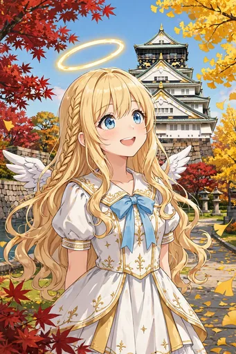
ノーマル
天守を背に、紅葉とイチョウに彩られた大阪城公園の場面。大阪の秋の定番の景色です。
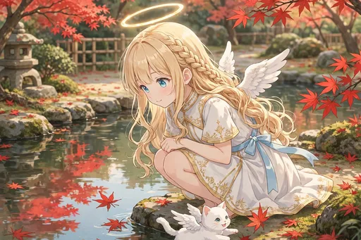
ノーマル
日本庭園の池に映る紅葉とモコ。静かな水面に、秋の色がもうひとつ広がります。
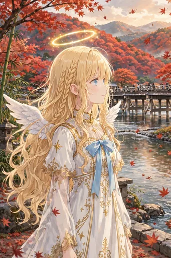
レア
渡月橋と紅葉の山を望む嵐山の場面。京都の秋を代表する景色に、足を止めて見とれます。
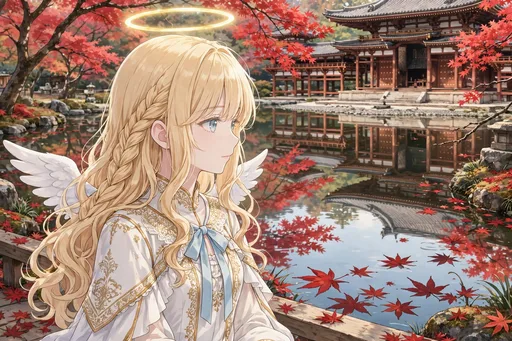
ノーマル
放生池と紅葉で知られる永観堂の場面。「モミジの永観堂」の名にふさわしい色づきです。
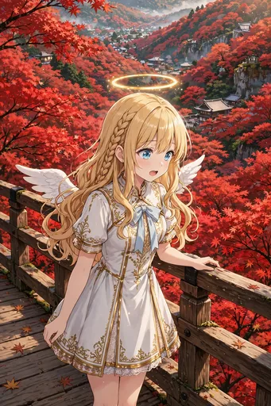
ノーマル
通天橋から見下ろす紅葉の海のような東福寺の場面。一面の色の波に圧倒されます。
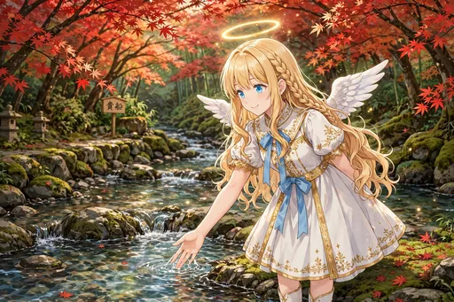
ノーマル
貴船の清流と紅葉の場面。水の音と秋の色に包まれる、静かな山あいの一日です。
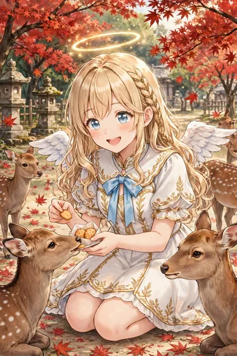
レア
奈良公園で鹿と紅葉に囲まれる場面。人懐っこい鹿たちに、モコも興味津々です。
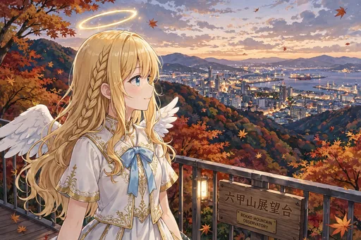
ノーマル
六甲山から、紅葉と暮れ始める街の灯りを望む場面。夕方から夜へ移る時間の景色です。
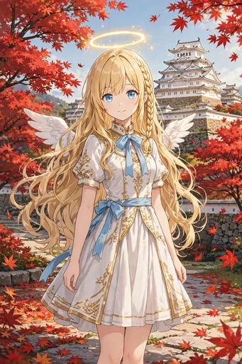
レア
白鷺城の白と紅葉の赤が映え合う姫路城の場面。世界遺産の秋の姿です。
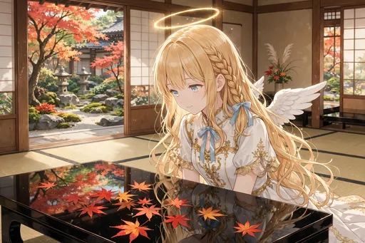
ノーマル
漆の机に映り込む紅葉を眺める「床もみじ」の場面。瑠璃光院のような、静かな秋の楽しみです。
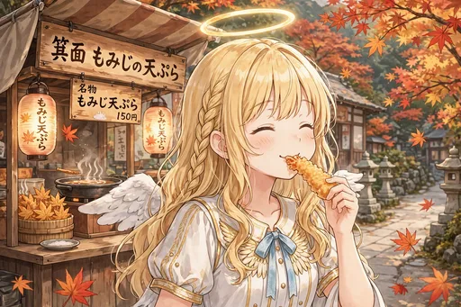
ノーマル
箕面名物もみじの天ぷらをほおばる場面。紅葉を「食べる」秋の味覚に、思わず笑顔になります。
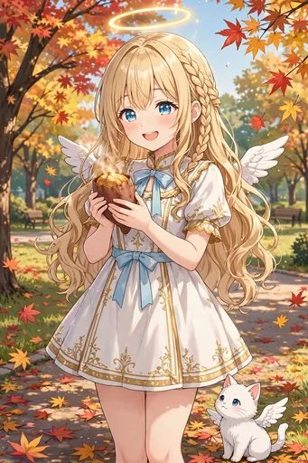
ノーマル
焼き芋を手に、ほかほかと笑顔になる場面。紅葉めぐりの合間の、秋の味覚の幸せです。
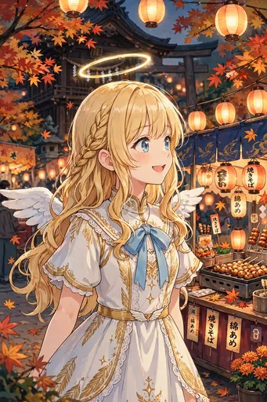
ノーマル
紅葉の下で開かれる秋祭りの屋台をめぐる場面。実りの秋の賑わいです。
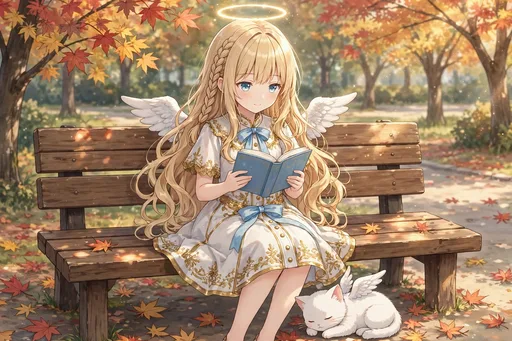
ノーマル
紅葉の公園のベンチで読書をする場面。色づく木々の下で、本の世界に浸る静かな時間です。
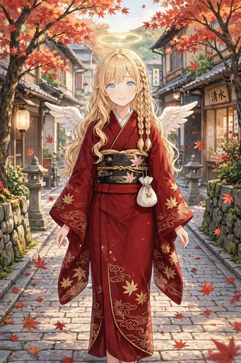
ノーマル
着物姿で紅葉の街を歩く場面。秋の色に、和の装いがよく溶け込みます。
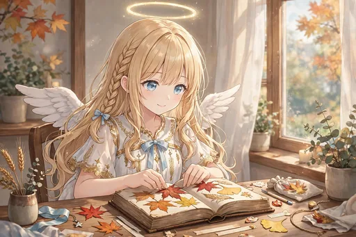
ノーマル
紅葉の押し葉でしおりを作る場面。旅の思い出を、形に残す小さな手仕事です。
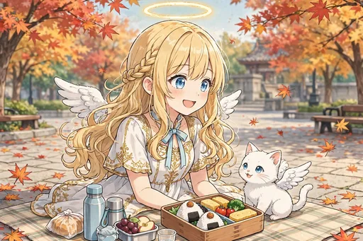
ノーマル
紅葉の下でお弁当を広げるピクニックの場面。色づく景色と一緒に味わう昼食は格別です。
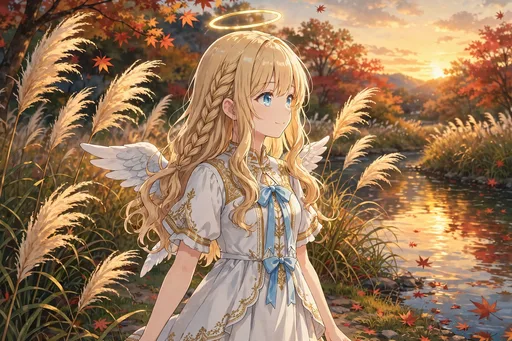
ノーマル
ススキの揺れる秋の夕方の河原の場面。実りの季節の終わりの、穏やかな夕暮れです。
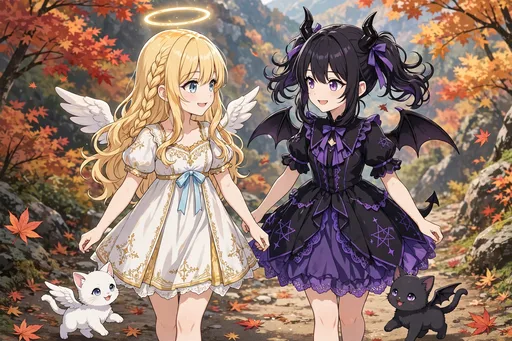
レア
ルチアとノワールも一緒の紅葉の場面。悪魔も、日本の秋の色には見とれてしまいます。
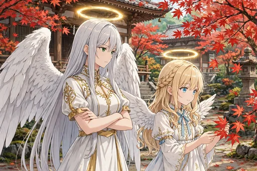
レア
紅葉を視察に訪れたガブリエラ先輩の場面。視察のはずが、秋の景色に足を止めています。
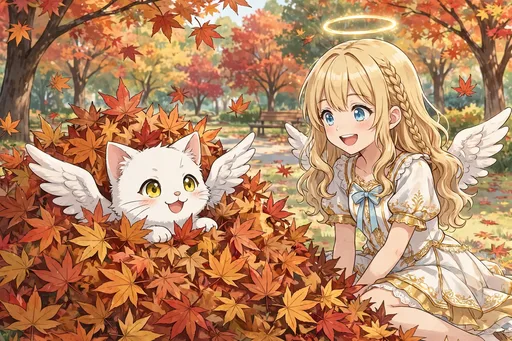
ノーマル
落ち葉の山で遊ぶモコの場面。小さな相棒も、秋を全身で楽しんでいます。

激レア
セラフィナ、ルチア、ガブリエラと、モコとノワールの、紅葉の中の集合場面。秋の旅の思い出の一枚です。
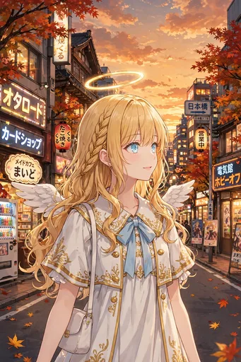
ノーマル
紅葉と夕日の日本橋への帰り道。めぐってきた秋の景色を胸に、家路につきます。
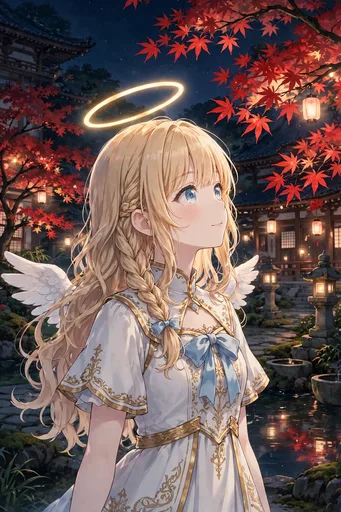
ノーマル
夜間拝観の紅葉ライトアップの場面。光に浮かぶ秋の色は、昼とは違う幻想的な表情です。
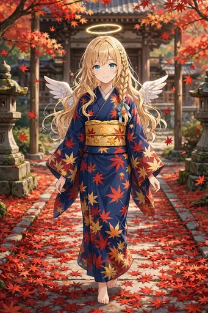
ノーマル
紅葉の絨毯のような参道を、着物で歩く場面。足元まで秋に染まった道です。
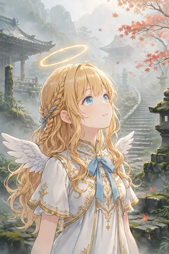
ノーマル
朝霧に包まれた紅葉の山寺の場面。静けさの中で迎える、秋の朝の清々しさです。
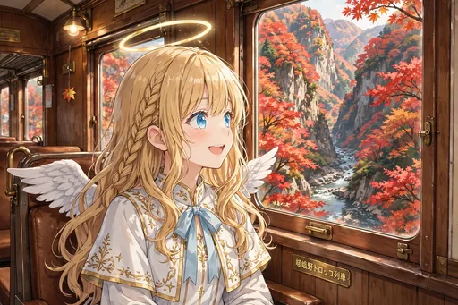
ノーマル
嵯峨野トロッコ列車から渓谷の紅葉を眺める場面。ゆっくり進む列車の窓が、秋の額縁になります。

激レア
紅葉に囲まれた全員集合の記念写真風の場面。関西の秋をめぐった第9弾のフィナーレです。